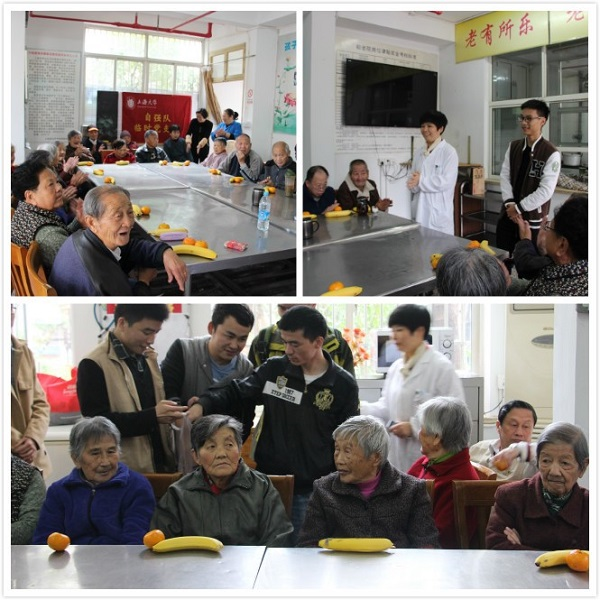

2015年11月22日，上午8:00，由上海大学自强队临时党支部组织的“关爱老人——走进共和新路街道敬老院”活动正式开始。自强队成员汪洋担任此次活动负责人，包括自强队胡小毛，江旭辉，杜映峰，刘振，贺永祥，张志松七名同学参加了此次活动。
上午9时，志愿者一行抵达共和新路街道敬老院。本次活动负责人汪洋同学首先向敬老院梁院长表明了本次活动是上大学子对老人的爱的奉献。之后，自强队的志愿者们陆陆续续为老人们送上新鲜的水果，陪老人聊天。在梁院长以及上海大学自强队成员的安排下，我们为老人们带来了一场场精彩的魔术以及歌唱表演。
活动期间，老人们开心的与魔术师进行互动，安静的倾听着志愿者们的歌声。一个个精彩的魔术，一首首老人们爱听的老歌使笑容一直洋溢在老人们的脸上，不曾消失。表演过程中不断地传出欢声笑语和热烈的掌声，上海大学自强队的成员们给老人们带来了欢乐也赶走了孤独。
作为一个上大人，我们一直牢记尊敬的钱伟长校长的教导：上海大学培养的学生首先是一个爱国者，一个全面的人，一个有文化艺术修养、道德品质高尚、心灵美好的人；其次才是一个未来的工程师、专门家。敬老爱幼是中华民族的传统美德，“老吾老以及人之老”，通过此次活动我们给敬老院的老人们献上爱心，呼吁更多的年轻人去关注老人，敬老爱老。最后，自强队的所有成员各自都向老人们表达了自己的祝福，衷心的祝福老人们能够老有所爱，老有所乐。
最后，在离开敬老院的时，梁院长表达了对上海大学自强队的感谢，也期待着上海大学学子再次的到来。通过此次活动自强队的成员们都深受感触，大家都下定决心要坚持投入到关爱老人的公益活动中来，为老人们带来欢乐带来幸福！
上海大学自强队
2015.11.22